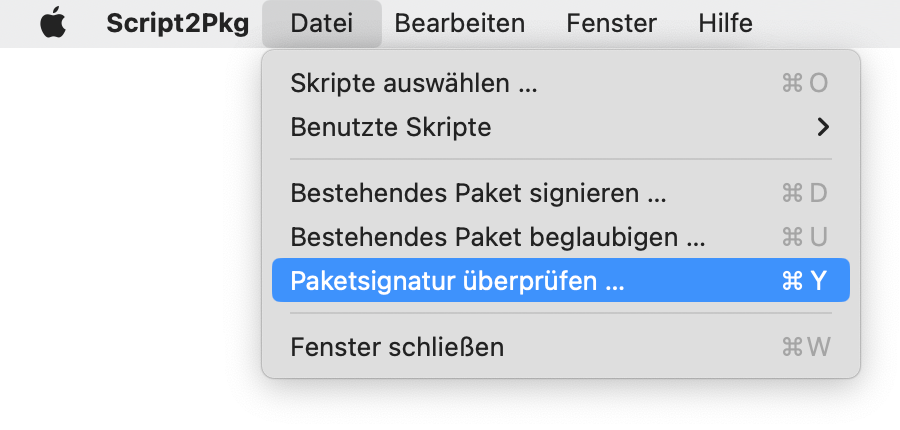
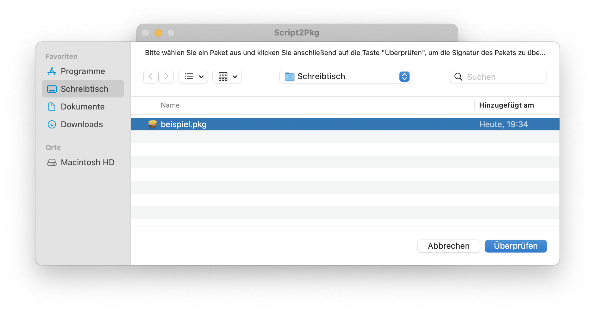
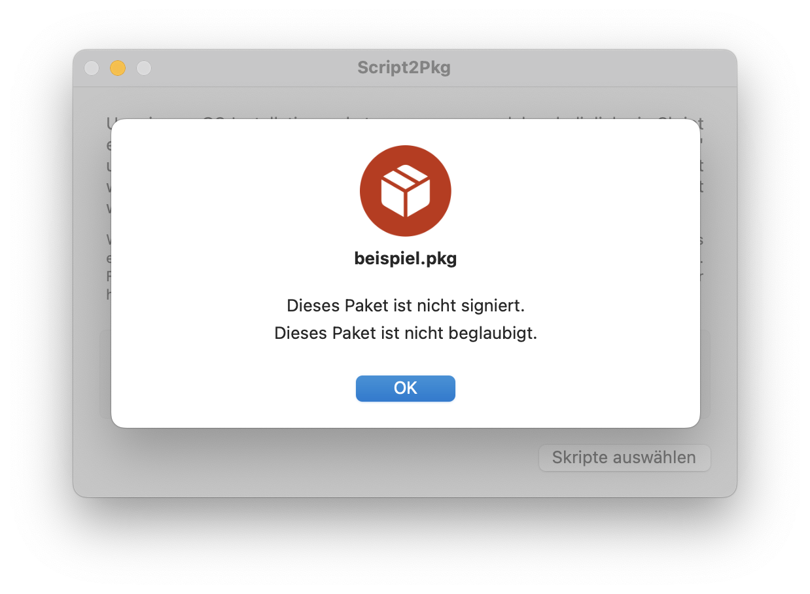
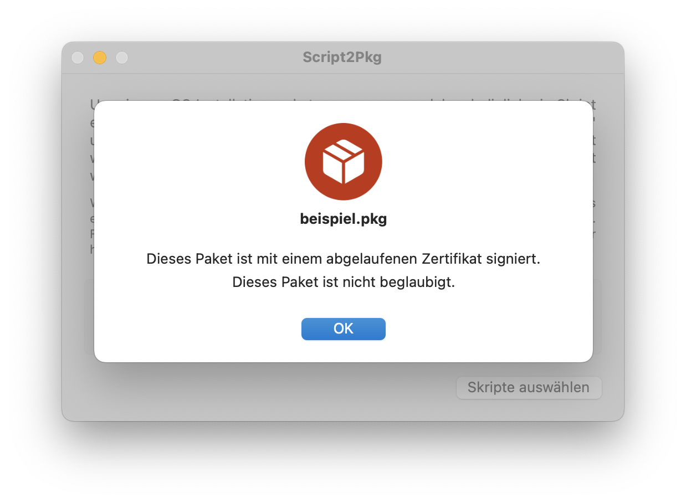
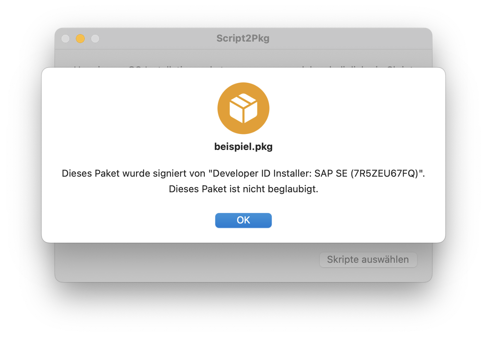
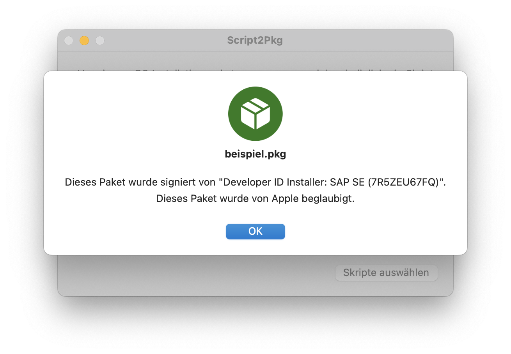

Script2Pkg
Script2Pkg
Script2Pkg
Paketsignaturen überprüfen
Die Anwendung kann bestehende Installationspakete überprüfen und folgende Informationen zurückliefen:
ob das Paket mit einem gültigen Zertifikat signiert wurde
ob das Paket mit einem gültigen Zertifikat signiert und von Apple beglaubigt wurde
Um ein beliebiges Installationspaket zu überprüfen, gehen Sie bitte wie folgt vor, um den Status des Paketes zu ermitteln:
1. Starten Sie die Anwendung .
2. Wählen Sie im Menü Datei den Menüpunkt Paketsignatur überprüfen … aus.

3. Wählen Sie ein Paket aus und klicken Sie die Taste Überprüfen .

Script2Pkg meldet den Status der Signatur und der Beglaubigung zurück.
Das Paket wurde weder von Apple beglaubigt, noch ist es signiert

Das Paket ist signiert, aber das Zertifikat ist abgelaufen

Das Paket ist mit einem gültigen Zertifikat signiert, wurde aber nicht von Apple beglaubigt

Das Paket ist mit einem gültigen Zertifikat signiert und von Apple beglaubigt
